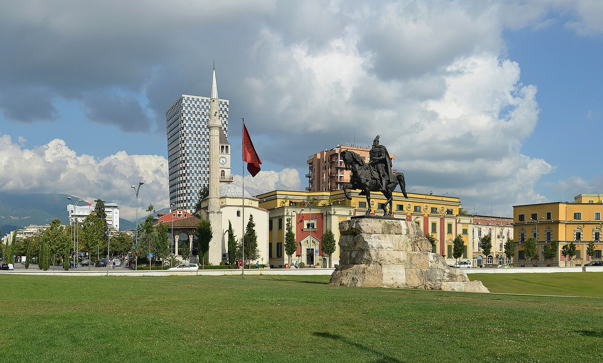
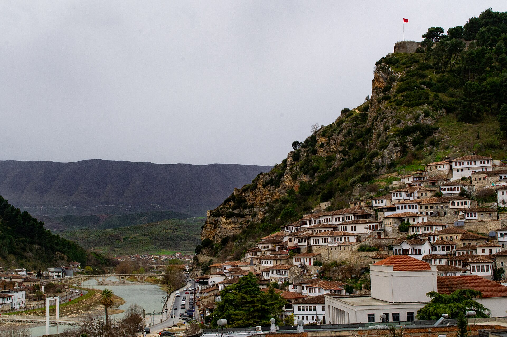
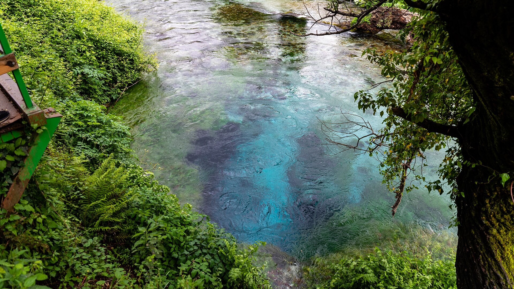
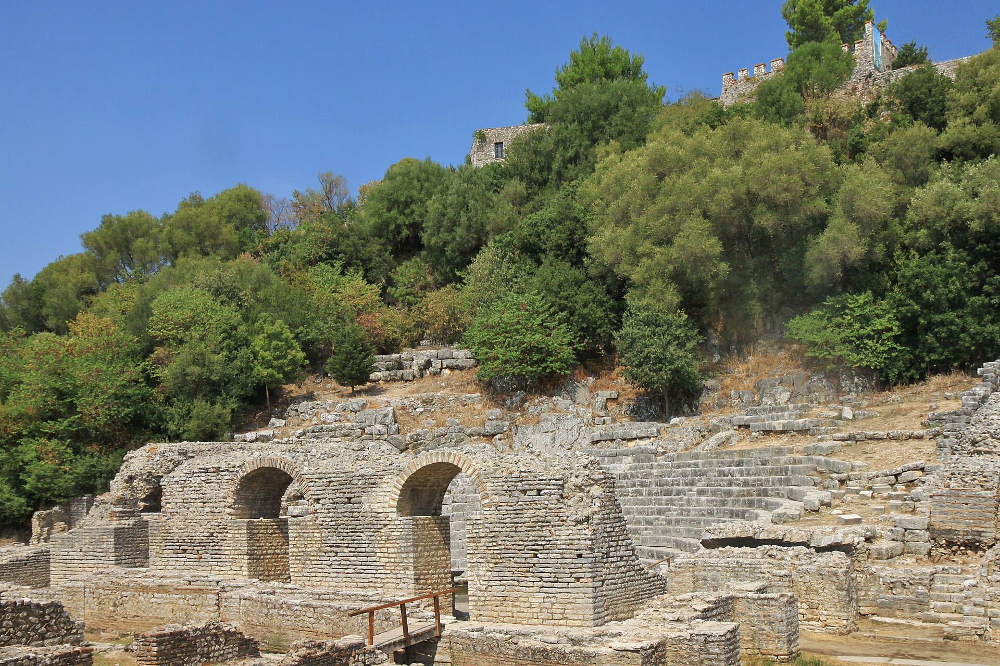

10
ימים באלבניה
~20
משתתפים · 5 משפחות
2
בסיסים: שן-ג׳רג׳ + קסאמיל
4–5
רכבים לכל החבורה
המסלול בקצרה: נחיתה בטירנה 13.8 בשעה 22:25 → לינה ליד שדה התעופה (הוילה רק מ-14.8) → 14.8 לוילה בשן-ג׳רג׳ (5 לילות, טיולי כוכב) → 19.8 מסע דרומה → קסאמיל (2 לילות) → 21.8 עולים צפונה ולנים ליד שדה התעופה → 22.8 יום אחרון פנוי → טיסה הביתה 19:55 (נחיתה בארץ 23:40).

טירנה

בראט

העין הכחולה

בוטרינט
💡 העיקרון: תכנית מרכזית אחת — וכל אטרקציה מתויגת לקבוצה שמתאימה לה. ביום שאין הסכמה? מתפצלים ונפגשים בערב.